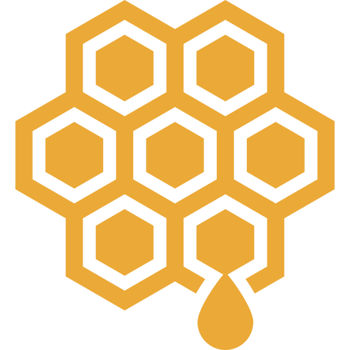
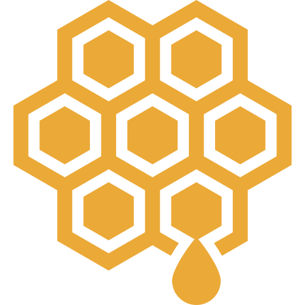

Products
 Honey - known for its healing and antibacterial properties, it keeps skin youthful and plump
Olive oil - rich in antioxidants and vitamins E and K. It moisturizes and protects the skin from free radicals contributing to healthier skin.

click here
 Honey - known for its healing and antibacterial properties, it keeps skin youthful and plump
Olive oil - rich in antioxidants and vitamins E and K. It moisturizes and protects the skin from free radicals contributing to healthier skin.
Inspired by old recipes from the Syrian Golan Mountains, where people of the region used mountain honey as the main ingredient in their skincare regime to maintain a youthful and clear complexion.
We are two Syrian students in pursuit of our dream to bring authentic handmade products from our homeland to the Dutch beauty market. With Lamsa cosmetics we aim to recreate simple yet effective recipes from the past. We combine the best raw oils, extracts, and butters that will treat, heal and promote healthier skin. We stand for transparency, sustainability, and clean skincare.
This recipe originated in the region of Golan, where locals once produced their own skin care creams and ointments using pure ingredients they collected from the mountains. Because many of these recipes have healing and nourishing properties the knowledge has been passed down through generations between family members and households. Such was the case with my father, Khalaf Mustafa, an agricultural engineer from the Golan region. Growing up I remember him creating his own skincare products for the family members with specific concerns. Up until recently, I never gave it much thought... However, after relocating to the Netherlands I observed how drastically different weather conditions began to negatively impact my skin. For the first time in my life my skin became dry and lifeless due to the cold. After conversing with different groups of people, I realized I was not the only one with the same skin concerns. So I finally decided to turn to my father for an advice. Basing his knowledge on the medicinal plants he introduced me to a simple yet effective cream recipe that was supposed to help protect and hydrate my skin. Under his clear guidance, I developed my first batch of homemade cream. And the results exceeded my expectations! Moving to the present day, I-Qusai Mustafa took it as a goal to carry on the old traditions of cream making and share long-proven recipes with the rest of the world. After months of extensive research, a new formula has been developed that not only adheres to the high market standards but also provides skin benefits without the use of harmful and artificial ingredients.